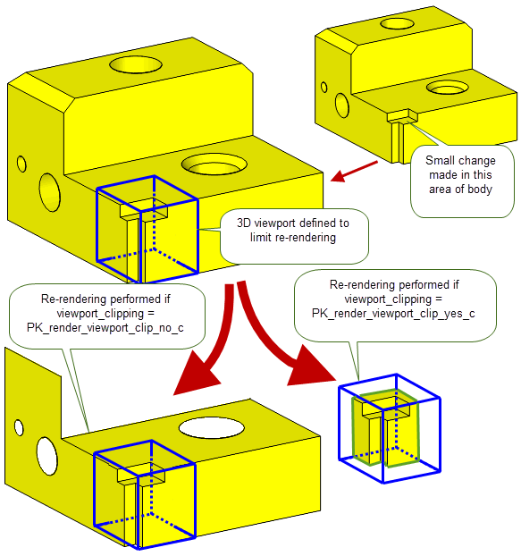

| |
Rendering Option Settings |
| <<< Rendering Functions | Chapters | Display Tolerances >>> |
The following chapter describes the various option settings of the rendering functions PK_GEOM_render and PK_TOPOL_render_line.
This section describes the options that you can set for PK_GEOM_render.
The description of the PK_TOPOL_render_line options contains further information about parametric hatching with an example of parametric surface output. See Section 106.3.18, “Hatching” for more information.
If
geoms
contains a blended lattice and
lattice
is set to PK_render_lattice_solid_c then the lattice will be rendered as solid with the blends ignored. A Parasolid report of type PK_REPORT_record_type_3_c is generated with a status of PK_REPORT_3_render_lattice_c containing information on the blended lattices that have been rendered without blends.
See Chapter 11, “Using Reports”, for more information about the Parasolid Report mechanism.
If you are working with entities that have been created at different scales, you can use the
entities_with_scales
and
scale_factors
options to specify the scale at which the supplied entities were created. Each entry supplied in
entities_with_scales
has a corresponding entry in the
scale_factors
array that indicates the scale relative to the smallest entity or the session is smaller.
You can choose to specify a scale factor by which the output will be rendered in using the
output_scale_factor
option. When the option is set to PK_scale_factor_1x_c, no scaling is applied.
|
Note: The use of this output scale factor is optional. Only one output scale factor can be supplied and this will apply to the scale of the results and not the actual entities. |
For more information on scaling factors and modelling with parts represented in different scales, see Chapter 23, “Distant and Multi-scale Modelling”.
This section describes the options that you can set for PK_TOPOL_render_line.
|
Note: This functionality offers partial support for facet geometry. |
By default, the edges of the model are always drawn.
The latter setting switches edge rendering off, allowing an application to generate view-dependent and view-independent graphics output data in separate calls to PK_TOPOL_render_line.
|
Render silhouettes, but detect near-circular silhouettes and render them as arcs |
Each silhouette is assigned a unique label when it is constructed which is passed into GO.
If a hidden-line picture is required (implied by the visibility option setting), the
silhouette
option must be set to a value other than PK_render_silhouette_no_c.
The PK_render_silhouette_arcs_c setting is a specialised option used in drafting which allows dimensioned arcs to be identified. This slows down rendering and is not recommended for general use.
See Section 105.2.1, “Line types” for more information on silhouettes.
The
sil_mesh_normal_field
option specifies whether silhouettes on faces with facet geometry are generated using either mvertex normals or mfacet normals.
|
Use mesh vertex normals to generate silhouette curves (Default) |
|
Silhouette curves generated using mvertex normals are smoother compared to those generated using mfacet normals, although they do not precisely follow the boundary between front-facing and back-facing facets. Figure 106-1 shows the difference in the silhouettes generated using either mvertex normals or mfacet normals.
Figure 106-1 Silhouettes generated using mvertex and mfacet normals
For more information on mfacet and mvertex normals, see Section 89.3, “Mesh normals”.
|
Note: This option is only available for bodies with facet geometry. |
This option specifies whether to render sharp mfins on faces with facet geometry. You can use PK_MFIN_is_sharp to find out if a given mfin is sharp. See Section 89.3.2.4, “Finding sharp mfins in meshes” for more information on sharp mfins.
The
sharp_mfins
option takes the following values:
When
sharp_mfins
is set to PK_render_sharp_mfins_yes_c, polylines that run along chains of connected sharp mfins will be rendered for every face that contains facet geometry. If the polyline lies along a silhouette, only the sharp mfin polyline is output. If an edge is coincident with a chain of sharp mfins, only the edge is output.
Figure 106-2 shows a single face body with a cube-shaped mesh attached with wire edges on the face. The wire edges on the face are partially coincident with a chain of sharp mfins therefore only the edge is output in the region of partial coincidence. See PK_TOPOL_render_line_o_t for more information on how sharp mfins are rendered.
For a list of the visibility codes that can be output by the GO, see Section 4.4.2.6, “Coincidence with sharp mfins” in the Downward Interfaces.
Figure 106-2 Rendering sharp mfins of a mesh cube
A hidden-line drawing classifies all lines (edges, silhouettes and hatch lines) according to their visibility, which in turn depends on the view supplied. PK_TOPOL_render_line returns lines and associated visibility codes that represent the type of line returned (e.g., fully visible, hidden by a face, hidden by another edge etc.).
It is your decision as to how to render each type of line from your GO; Parasolid merely returns visibility codes and does not decide how the lines should appear. For example, you can opt to render all hidden lines in the same manner (regardless of what they are hidden by); or you may wish to exclude altogether those lines that are hidden by other lines, to avoid cluttering the diagram. The following table presents the values for the
visibility
option:
|
No visibility conditions evaluated: return all lines marked as visible.(Default) |
|
|
Hidden lines are returned and marked as invisible. A distinction is made between those hidden by other lines and those hidden by faces of the body. |
|
|
Evaluate visibility conditions and allow output to be controlled by the |
You can find a complete list of all the visibility codes that can be output by the GO in Section 4.4.2, “Line type”, of the Downward Interfaces manual.
|
Note: The PK_render_vis_inv_draft_c option cannot be used with a view transform entity whose underlying matrix has a perspective term. |
Figure 106-3 and
Figure 106-4 illustrate the effect of all of the
visibility
values except for PK_render_vis_extended_c.

Figure 106-3 A block with bosses, shown from two different directions
Figure 106-3 shows a block with two bosses, as seen from a standard three-dimensional view and also a two-dimensional plan view with view direction (0 0 1) (i.e., from below the object).
Figure 106-4 shows some sample hidden-line drawings based on what would be seen if you were looking at the object from the plan view shown in Figure 106-3(b), although the pictures are actually shown from the standard 3D view.
Figure 106-4 Rendering
Figure 106-3 with different values of the
visibility
option
In diagram (a) above, all lines are rendered, as they are all marked as visible. Note that the silhouette lines for the upper boss are not rendered, because in the view direction (0, 0, 1) this boss has no silhouette. In diagram (b), no hidden lines are rendered, as they have not been returned by the function. In diagram (c), all lines are rendered but those that are hidden are displayed differently. The same is true in diagram (d), where an additional distinction between lines hidden by edges or faces is made.
|
Note: Where a line is obscured by both an edge and a face, as is the case with the uppermost circle in
Figure 106-4 (d), it is treated as being hidden by an edge. In other words, being hidden by an edge takes precedence over being hidden behind a face. |
The
visibility
option PK_render_vis_extended_c enables the
invisible
,
drafting
, and
self_hidden
options: see sections Section 106.3.6, “Invisible”, Section 106.3.7, “Drafting”, and Section 106.3.8, “Self-hidden” respectively. These let you specify more precisely how the GO data should differentiate between different cases of obscured lines. These three options are ignored if
visibility
is not set to PK_render_vis_extended_c.
When displaying hidden lines (using either PK_render_vis_inv_c, PK_render_vis_inv_draft_c, or PK_render_vis_inv_extended_c), you can prevent the display of hidden lines on specific bodies passed to PK_TOPOL_render_line. See Section 106.3.22, “Suppressing hidden lines in bodies in an assembly” for details.
This option specifies whether invisible lines are output when
visibility
is set to PK_render_vis_extended_c.
The resulting GO output is described in Section 106.3.22, “Suppressing hidden lines in bodies in an assembly” section.
When
invisible
is PK_render_invisible_yes_c, you can prevent the display of invisible lines on specific bodies passed to PK_TOPOL_render_line. See Section 106.3.22, “Suppressing hidden lines in bodies in an assembly” for details.
This option determines whether or not a distinction is made between lines hidden by lines and lines hidden by faces when
visibility
is set to PK_render_vis_extended_c.
|
Do not distinguish between lines hidden by other lines and lines hidden by faces (default). |
|
|
Distinguish between lines hidden by other lines and lines hidden by faces. |
The resulting GO output is described in Section 106.3.22, “Suppressing hidden lines in bodies in an assembly” section.
This option is used to determine whether a distinction is made between lines hidden by faces of their own occurrence (i.e., from the same connected body) and lines hidden by faces of another occurrence (i.e., from a separate body or component of a disjoint body) when
visibility
is set to PK_render_vis_extended_c. Lines that are hidden by faces of their own occurrence are called
self-hidden.
|
Do not distinguish between self-hidden lines and other invisible lines.(Default) |
|
|
Distinguish between self-hidden lines and other invisible lines. |
Figure 106-5 shows the effect of each value of
self_hidden
, where
invisible
is PK_render_invisible_yes_c and
drafting
is PK_render_drafting_yes_c.
Figure 106-5 The effect of the
self_hidden
option
The
smooth
option generates additional graphics output data which specifies whether an edge is “smooth”, “not smooth” or “smooth but coincident with a silhouette” (for view-dependent and hidden-line drawings only).
The value for
smooth
indicates whether the direction of the normal to the surface varies continuously across the edge or not. Examples of smooth edges are blend boundaries and edges which have been scribed onto a face.
If the option is not given, all edges are output with their smoothness code set “unknown” (CODUNS).
Although an implementation of GO may choose to ignore smooth edges, (those output with smoothness code CODSMO), it must draw ones classified as coincident with a silhouette (marked with code CODSMS) or gaps will occur in the drawing, where the obscured silhouette line was found.
|
Indicate whether edges are smooth, and also whether they are coincident with other lines. |
The PK_render_smooth_draft_c setting is a specialized option which detects cases where smooth edges are coincident with lines (other than silhouettes) and reclassifies these before output through GO as being obscured by the faces of the smooth edge (i.e. tagged as CODDRV) rather than being obscured by the smooth edge itself.
The reason for the option is to provide support for implementations of GO which simply ignore smooth edges; it avoids the case where a smooth edge obscures part of another edge and ignoring it would cause gaps in the drawing.
There is no need to use the smoothness option if your GO does not use smoothness data.
You can use the following two options to specify a tolerance within which an edge is considered smooth:
|
If PK_LOGICAL_true, If PK_LOGICAL_false, the angular tolerance used depends on the accuracy of the edge.(Default) |
|
|
The angular tolerance (in radians) for smooth edges. An edge is considered smooth if the angle between the normals of the two faces that meet at the edge is less than |
Figure 106-6 Angular tolerance for smooth edges
The
internal
option is used to specify whether to indicate internal edges, i.e. where faces on either side of the edge lie on the same surface.
If the
internal
option is set to PK_render_internal_no_c, the GO data is output with the internal edge value set to ‘unknown’ (CODINU). If it is set to PK_render_internal_yes_c, Parasolid will calculate and output whether the edges are:
The application can decide whether to suppress drawing these edges.
You can use the
ske_missing
option (PK_render_ske_missing_t) in PK_TOPOL_render_line to control whether Parasolid attempts to render bodies that have missing geometry information. Generally, rendering is best performed on bodies whose geometry is completely specified. However, there may be times - for example if you are attempting to work with model data that has been imported from another source - when it is useful to be able to visualise a body that has missing information.
The
ske_missing
option takes the following values:
|
Return an error if any of the entities in the body to be rendered are missing geometry. (Default) |
|
|
Ignore entities with missing geometry and continue to sketch other entities. |
Note: This option is only valid for wire-frame sketches; that is, when
visibility
has its default value of PK_render_vis_no_c. |
This option allows small features to be ignored, where a small feature is a set of connected faces whose box is smaller than a user-specified value. The small feature is replaced by a loop of edges which indicates the position of the boundary between the small feature and the model. These loops are either completely visible or invisible (see Figure 106-7).
|
Note: For this option to take effect, the visibility must
not be set to PK_render_vis_no_c. See Section 106.3.22. |
The options available for
ignore
are:
If
ignore
is set to PK_render_ignore_absolute_c then any feature whose size box is smaller than this value is ignored. If
ignore
is set to PK_render_ignore_ratio_c then the value input corresponds to the ratio of the feature box size to the size of the box containing the model, i.e. if this value is set to 0.01 then a feature is ignored if its box is smaller than 1% of the model’s box.
Not all small features are ignored. This is determined by the position of the boundary between the small feature and the rest of the model, only if this boundary lies completely within a face of the model is the small feature ignored.
In the left-hand illustration of Figure 106-7 the boundaries of the small features lie completely within another face in the model. These features are replaced by a loop of edges indicating where the features lie on the model. Each edge in these loops is still output, but is labelled with the code ‘CODIGN’ where it would normally have its ‘internal’ property output. See PK_GOSGMT_f_t, in the PK Interface Programming Reference Manual for information about CODIGN.
In the right-hand illustration of Figure 106-7 the boundaries of the small features lie across the boundary of two faces. These features cannot be ignored.
Figure 106-7 Ignoring small features - demonstrating small features that can be ignored and those that cannot.
The hierarchical output option can be used when rendering a hidden-line drawing. It specifies that edges/silhouettes/hatch lines must be output through GO hierarchically, consisting of two calls to GOSGMT, enclosed by a pair calls to GOOPSG and GOCLSG.
The first call to GOSGMT defines the line segment type and its geometry.
The second call to GOSGMT defines a “visibility segment” (SGTPVP), specifying points at which the segment visibility or smoothness changes and the visibility codes for edges/silhouettes/hatch line between these points.
If geometry is being output in polyline form, there is an option which outputs an additional parameter with each visibility transition point corresponding to its position along the polyline.
|
do not output geometry segments, but do output visibility segment data |
|
|
output geometry segments and output visibility segment data with polyline parameterisation |
The PK_render_hierarch_no_geom_c option can only be used if the segment geometry has been output in an earlier call to PK_TOPOL_render_line and has been stored by the application.
See Section 4.3.1, “Segment hierarchy” in the Downward Interfaces manual for more information.
This option specifies which format is used by the graphics output functions to output rendering data for B-curves. This applies to B-curves which are defined in the model and to derived B-curves such as hatch and boundary lines on B-surfaces.
Curves are output in rational or non-rational form; depending on the order of the original curve or surface from which is was derived.
See Appendix B, “The Mathematical Form Of B-Geometry” for further information.
You can let your application have a degree of control over the amount of system resources during hidden-line operations using the
memory_target
and
memory_target_value
options for PK_TOPOL_render_line. These options let you specify a peak memory value that Parasolid attempts to keep within during the call to PK_TOPOL_render_line.
Controlling memory usage during hidden-line operations can be useful for:
Although this technique results in an increase in total processor time, in certain cases it can result in a decrease in the elapsed (real) time taken to render the assembly.
Parasolid does not guarantee to meet the specified target.
|
Whether to keep memory usage within a specified value. This can be one of:
|
|
|
A target value, in bytes, that Parasolid attempts to keep memory usage within during the call to PK_TOPOL_render_line.(Default:0) |
|
Note: For this option to take effect, the visibility must
not be set to PK_render_vis_no_c. See Section 106.3.22, “Suppressing hidden lines in bodies in an assembly”. |
Using this option can bring varying degrees of success, depending on the target you specify, the resources available on the machine, and the size of the assembly that you are rendering. Different memory targets and different assemblies may yield improvements in memory usage, or elapsed time taken to render, or both.
Your application could typically follow these steps in order to calculate a suitable target memory value:
For large assemblies, a memory target in the region of 100MB may be possible, regardless of the original memory requirement. Using this option may let you render some assemblies successfully that would otherwise be impossible to display.
You can use the
report_lines
option to report whether there are any model curves to which Parasolid could not fit polylines during rendering. This takes the following values:
|
Report line fits that have succeeded using looser tolerances |
|
|
Report line fits that have failed, and line fits that have succeeded using looser tolerances |
If
report_lines
is set to any of the above values except PK_render_report_line_no_c, a Parasolid Report of type PK_REPORT_record_type_3_c is generated with a status of PK_REPORT_3_line_fit_tols_c and returns information for curves where the line fit has failed.
See Chapter 11, “Using Reports”, for more information about the Parasolid Report mechanism.
Parasolid supports planar hatching, radial hatching and parametric hatching.
Planar hatching can be expensive to calculate for some types of surface, hence the other, surface-specific types of hatching.
When constructing hidden-line drawings, hatch lines are classified as visible/invisible in a similar way as used when drawing the model edges.
Planar hatching instructs the function to output lines representing the intersections of a face with a family of equally spaced parallel planes.
|
Apply planar hatching to planar faces that have a hatch attribute set using the defined attribute values. You can apply more than one planar hatch to a face, depending on the information in the attached attribute. See Section A.3.5.2, “Parametric hatch”, for more details. |
|
|
Apply planar hatching to all planar faces using the |
|
|
Apply planar hatching to all planar faces using the |
The
planar_hatching
value defines the hatch spacing in model units.
The
axis
field of
planar_axis
specifies the normal direction of hatch planes.
The
location
field of
planar_axis
defines a point on one of the hatching planes which allows the application to control the relative position of hatch lines on a face. This option allows the application to simulate more complex hatch spacing by varying the location and calling PK_TOPOL_render_line multiple times.
The PK_render_planar_free_c option specifies that Parasolid should choose the start position for hatching.
Figure 106-8 Planar hatching (both cubes drawn with PK_TOPOL_render_line)
Radial hatching is used on cylindrical, spherical, conical, toroidal and blending faces (described below as radial faces).
The radial hatching parameters allow cross-hatching of faces to be specified, such as producing lines both along and around a cylinder.
|
apply radial hatching to radial faces which have a hatch attribute set using the defined attribute values |
|
|
apply radial hatching to all radial faces using some/all of the floating point values supplied in the options structure as detailed below (Parasolid chooses the starting values): |
|
|
apply radial hatching to all radial faces using some/all of the floating point values supplied in the options structure as above; to specify starting values for hatching, see options below (if none are supplied PK_render_radial_yes_c behaves like PK_render_radial_free_c with Parasolid choosing the starting values):
|
The initialised values of zero imply that hatching is not required in a particular direction (the full meaning depending on the surface types).
Figure 106-9 Radial hatching using
radial_around
= pi/2 to control vertical hatch lines and
radial_along
= 7 to control the spacing between the circular hatch lines
Figure 106-10 Radial hatch (using the same option data as Figure 106-9)
The hatched torus looks messy using this value of
radial_along
to control the spacing between the circles centered on the spline.
If we use the
radial_about
value instead, to control this spacing by giving an angle to use between the planes which produce these intersection circles, it is much easier to control what happens.
Figure 106-11 Radial hatching using all three data options
The interpretation of different radial values for cylindrical and conical surfaces is as follows:
The interpretation of different radial values for spherical surfaces is as follows:
The interpretation of different radial values for toroidal surfaces is as follows:
radial_around |
controls the spacing of circular hatch lines centered on the axis of the torus, as would be generated by a cone (axis parallel to torus axis, passing through spine of torus) whose half angle is incremented by the given value, which must be in the range 0 to two pi |
radial_along |
controls the spacing of circular hatch lines centered on the spine of the torus, as would be generated by a plane rotating about the axis of the torus (see “ |
radial_about |
controls the spacing of circular hatch lines centered on the spine of the torus, as would be generated by a plane rotating about the axis of the torus (see “ |
radial_around_start |
|
radial_about_start |
|
radial_along_start |
The interpretation of different radial values for edge-blend surfaces is as follows:
radial_along |
controls the spacing of circular hatch lines running around the surface perpendicular to its spine, equivalent to the circles generated by this value for cylindrical surfaces (as would be generated by a plane stepping along the surface spine by the given distance) |
radial_around |
|
radial_about |
|
radial_along_start |
the parameter of the spine curve returned from PK_BLENDSF_ask |
radial_around_start |
|
radial_about_start |
Parametric hatching instructs the function to output data corresponding to parametric hatch lines.
|
apply parametric hatching to any faces which have a hatch attribute set using the defined attribute values |
|
|
parametric hatching using |
|
|
parametric hatching using
|
|
|
parametric hatching using |
Parametric hatch lines can be output on any type of surface. The lines output are the locus of points of constant parameter on the equivalent B-surface.
Figure 106-12 Parametric hatching
On faces, the spacing starts at the low parameters of the parameter box of the faces, as returned by PK_FACE_find_uvbox.
|
Note: It is not possible to output constant v parameter curves on blend surfaces. |
This option is only available when drawing view-independent topology.
It instructs the rendering function to draw unfixed blends as they would appear when fixed.
If the entities being drawn are bodies or edges, an unfixed edge is not output directly. Instead the edges of the faces adjacent to the edge are clipped and rib lines are added at each end of and possibly along the spine of the unfixed blending edge.
If an unfixed blended edge is drawn in isolation, no other graphical information about the attached faces is output.
The parameters of an unfixed blend are held as a blended attributes. These describe the start and end radii and possibly a specific rib spacing distance to use when the unfixed blend is drawn.
|
Warning: Unfixed blends cannot be specified in a view-dependent or hidden-line drawing. |
Figure 106-13 Unfixed blends, drawn with and without surrounding edges
Parasolid allows assemblies and lists of bodies that overlap in model space to be rendered with hidden lines such that the results are predictable and stable. Where the edges and silhouettes of one body intersect with the face of another, those lines are trimmed to the intersecting face. New intersection curves can also be generated, although this does incur a performance overhead. In these cases, however, the overhead can be minimised if you know which bodies are likely to overlap.
|
Note: For any overlapping options to take effect, the visibility must
not be set to PK_render_vis_no_c. See Section 106.3.22. |
The values available for the
overlap
field are:
|
Do not allow for overlapping bodies (Default). Parasolid assumes that the bodies being rendered do not overlap. If there are overlapping bodies present then these are not detected and the resulting picture may contain errors; you must set overlap to a non-default value to render the assembly correctly. |
|
|
Parasolid detects the presence of overlapping bodies and splits the existing lines appropriately. However, no new curves or edges are generated. Using this option incurs a performance overhead compared to PK_render_overlap_no_c. |
|
|
Parasolid detects the presence of overlapping bodies and splits the existing lines appropriately. It also generates new intersection curves where the bodies intersect, and the corresponding edges on the intersecting faces. Juxtaposed bodies (those that do not have well-defined interference curves) are displayed as they would be using PK_render_overlap_yes_c. The use of this option incurs an additional performance overhead compared to PK_render_overlap_yes_c. This can be reduced if you know which bodies might overlap, as you can instruct Parasolid to ignore the remaining bodies. |
|
|
This option has the same effect as PK_render_overlap_intsec_all_c but uses a different method to compare potentially overlapping bodies. It also incurs an additional performance overhead compared to PK_render_overlap_yes_c. |
Figure 106-14 demonstrates the effect of each of these settings on a rendered image. It shows a cylinder passing through a cylindrical hole drilled in a block; the diameter of the cylinder being slightly larger than the diameter of the hole so that the cylinder and the block overlap.
Figure 106-14 Overlapping bodies: demonstrating the effect of the overlap option on a rendered image
In
Figure 106-14, when
overlap
is set to PK_render_overlap_no_c, Parasolid does not detect that the silhouettes of the cylinder intersect the block and they are not output with the correct visibility.
When
overlap
is set to PK_render_overlap_yes_c, the silhouettes of the cylinder are intersected with the face and rendered correctly.
When
overlap
is set to PK_render_overlap_intsec_all_c or PK_render_overlap_intsec_pair_c, the silhouettes of the cylinder are intersected with the face and rendered correctly, with new edges generated where the faces of the overlapping bodies intersect.
When generating new intersection curves and edges, if you know which bodies are likely to overlap, you can optimise the performance of Parasolid by using the
overlap_indices1
and
overlap_indices2
arrays. These arrays take indices of specific bodies in the
topols
array (as passed to PK_TOPOL_render_line), enabling you to restrict the checks performed by
overlap
to just these bodies. The following table describes the combinations available, depending on the value of
overlap
:
Bodies can be rendered so that they appear transparent, such that they do not hide other bodies, as shown in Figure 106-15.
Figure 106-15 A transparent cube with cylindrical hole between two solid cubes
If a body is rendered as transparent it will not hide its own lines, and will not hide the lines of other bodies, as shown in Figure 106-16.
Figure 106-16 Hidden lines when rendering a wire body as transparent, viewed in front of a solid body
There are two ways that a body can be rendered transparent:
topols
array of an occurrence of the body to the
transparent_indices
array in PK_TOPOL_render_line_o_t.
You can choose which of the above methods is used using the
transparency
option in PK_TOPOL_render_line_o_t, which takes the following values:
The
transparent_indices
array contains the index values of body occurrences that you want to render transparent, according to the position of those occurrences in the
topols
array. For instance, if you want to render transparent the body occurrences that are in the first, third, and fourth positions of the
topols
array,
transparent_indices
should be (0, 2, 3). In this case,
n_transparent_indices
is 3.
You can also use the
transparent_hid
option to control how transparent entities are rendered. By default, transparent entities are rendered as transparent, as shown in
Figure 106-15. However, if
transparent_hid
is set to PK_render_transp_hid_yes_c, transparent entities are rendered as opaque relative to themselves and other transparent bodies, but transparent relative to non-transparent bodies.
Figure 106-17 demonstrates this setting: the transparent body is drawn as opaque relative to itself (you cannot see its own hidden lines), but transparent with respect to the non-transparent body behind it.

Figure 106-17 Rendering transparent bodies as opaque
If you are rendering a hidden-line view containing several bodies, you can switch off hidden-line display for specific bodies. This can have benefits in terms of:
You can prevent hidden lines in specific bodies using the
suppressed_indices
option. This is a list of indices into the
topols
passed to PK_TOPOL_render_line that indicates which bodies should have no hidden lines.
For example, if three bodies are passed as
topols
, and you want to suppress hidden lines in the first and third of these, set
suppressed_indices
to
[0 2]
, and the accompanying
n_suppressed_indices
option to
2
.
Figure 106-18 shows an example in which a total of six bodies are rendered using the view direction shown.
Figure 106-18 Suppressing hidden-line display in specific bodies in an assembly
Note: You can only use this option if
visibility
is one of the following values:
See Section 106.3.22, “Suppressing hidden lines in bodies in an assembly”, for more details. |
Parasolid lets you specify one or more viewports - discrete volumes of three-dimensional space - so that you can control which entities in a body are rendered. This is a particularly useful way of improving rendering performance in cases where you are performing modelling operations on a large body that only change a small number of entities, or entities in a discrete part of the body: by specifying a viewport, only the entities that are inside that viewport are re-rendered.
This section describes how to use viewports to render large bodies efficiently.
Generally when you use viewport functionality, you only want to specify a single viewport. Sometimes, however, it might be useful to use several viewports in a single call to PK_TOPOL_render_line; if, for instance, you want to re-render discrete changes in different components of a disjoint body.
You use the
viewport
option in PK_TOPOL_render_line_o_t to specify whether to use single or multiple viewports. This takes the following values:
A single viewport is specified using the
viewport_sf
option. This takes a standard form for a single non-aligned box.
When multiple viewports are used,
viewport_sf
is ignored, and the viewports are specified using the following options:
Whether you use a single viewport or multiple viewports, Parasolid supports two different kinds of viewport: 3D and 2D viewports. Both of these are defined using a non-aligned box (PK_NABOX_sf_t).
You use the
viewport_type
option to specify the type of viewport. The default type of viewport is 3D (PK_render_viewport_type_3D_c).
|
The orientation of the viewport is derived from the local axes of the non-aligned box.
The size of the viewport is derived from the |
|
|
A 2D viewport is a rectangular window through which world space can be viewed along a specified view direction. |
The view direction for the viewport is taken from the z axis of the non-aligned box, as defined using the The window of the viewport is derived from the x and y axes of the non-aligned box:
The size of the window is taken from the first 4 coordinates of the |
Figure 106-19 illustrates the differences between typical 3D and 2D viewports onto a body; these viewports could be specified using the same non-aligned box.
Figure 106-19 Specifying 2D and 3D viewports on a body
|
Note: If you specify multiple viewports, then they must all be either 2D or 3D: you cannot mix the two types. |
Usually, some entities in a body cross the boundary of a viewport; they are not entirely contained within the definition of the viewport itself. Parasolid provides the
viewport_clipping
option to let you control whether such entities are completely rendered, or whether the rendering is clipped to the boundary of the viewport itself. The
viewport_clipping
option takes the following values:
|
Do not provide clipping information for the rendering operation. For any face that clashes with the specified viewport, all curve data associated with entities belonging to that face are rendered. (Default) |
|
|
Note: Provide clipping information for the rendering operation. Curve data that lie outside the specified viewport are marked as being outside the viewport and no visibility information is provided. See Section 4.4.2, “Line type”, in the Downward Interfaces manual for more information. Note: If you are using a 3D viewport, any clashes between rendering faces and viewport faces will result in the generation of a clip line. |
Using the same viewports and body illustrated in Figure 106-19, Figure 106-20 shows the entities that are returned for a 3D viewport when clipping is on or off (clip lines are shown in green), and Figure 106-21 shows the entities returned for a 2D viewport when clipping is on or off.
Figure 106-20 Clipping a 3D viewport
Figure 106-21 Clipping a 2D viewport
The
region
option can be used when rendering a hidden-line drawing. It generates additional graphics output data which allows your application to analyse the projected (2-dimensional) hidden-line picture into distinct regions and link up the boundaries of the regions appropriately.
There is no need to use this option if your GO does not use such regional data. The
region
option takes the following values:
|
Output regional data for lines bounding faces that have the SDL/TYSA_REGION system attribute set. See Section A.4.4, “Region”, for information about this attribute. |
|
Regional data is attached to all boundary line segments, that is, to edge, silhouette, interference, and clip segments, and is output as follows:
When the hidden-line picture is projected into two dimensions, the lines divide the plane into distinct regions, as shown in Figure 106-22.

Figure 106-22 Regional data - hidden-line picture
|
Note: For simplicity,
Figure 106-22 shows an example of how a line projected from a single edge (highlighted) is split at intersection points. In reality, lines projected from every edge in the body are split in this way. |
For each region that derives from a face, the lines whose projections in the plane bound the region are all output with regional data. This data indicates which points in the image bound the line, and which faces are on each side of the line. Your application can then construct the loops and regions of the image. If
region
is PK_render_region_attrib_c, then regional data is only output for lines bounding regions that derive from faces that have a SDL/TYSA_REGION attribute attached.
For information about how regional data is output, see Section 4.5, “Interpreting regional data”, in the Downward Interfaces manual.
If you are working with bodies that have been created at different scales, you can use
bodies_with_scales
and
scale_factors
options to specify the scale at which the supplied bodies were created. Each entry supplied in
bodies_with_scales
has a corresponding entry in the
scale_factors
array that indicates the scale relative to the smallest entity or the session if smaller.
You can choose to specify a scale factor by which the output will be rendered in using the
output_scale_factor
option. When the option is set to PK_scale_factor_1x_c, no scaling is applied.
|
Note: The use of this output scale factor is optional. Only one output scale factor can be supplied and this will apply to the scale of the results and not the actual entities. |
For more information on scaling factors and modelling with parts represented in different scales, see Chapter 23, “Distant and Multi-scale Modelling”.
| <<< Rendering Functions | Chapters | Display Tolerances >>> |